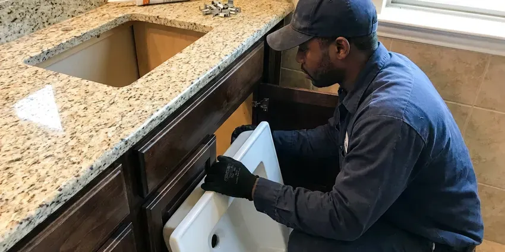

Sink Drain Replacement in Kenosha, WI
Is your sink drain failing in Kenosha, WI? HKV Plumbing offers prompt and efficient replacement services to restore your kitchen or bathroom plumbing.
- Same-Day Drain Replacement
- Expert Plumbers
- Full Trap and Arm Swaps
- Finish-Matched Drain Assemblies

Expert Sink Drain Services in Kenosha, WI.
One call gets a licensed plumber with the right drain parts to your door.
Professional Sink Drain Replacement in Kenosha, WI
HKV Plumbing replaces sink drains when repair is no longer worth it, like when a chrome drain body has rusted thin or a plastic trap has cracked at the nut. Water softeners are a standard feature in many Wisconsin homes, helping protect water heaters, fixtures and appliances from scale. Mineral scale can also lock up pop-up rods until they snap, and a new assembly costs less than you might expect and ends repeat leaks.
Our expertise includes:
- Install new drain lines and P-traps
- Fix or replace trap arms and wall drain connections
- Install all types of P-traps, S-traps, and continuous waste systems.

Additional Bathroom Plumbing Services in Kenosha, WI
From toilets to showers, our bathroom plumbing team in Kenosha, WI handles repairs, installs, and upgrades with tidy, code-compliant work.


Customers
Why Choose HKV Plumbing for Sink Drain Replacement in Kenosha, WI?
A failing drain leaks every time the sink is used, slowly ruining the vanity floor. Replacing the whole assembly at once stops the leak and prevents the next weak part from failing.
- Transparent Pricing, We provide upfront, fair pricing for all sink drain replacement jobs, with no hidden fees.
- Code Compliant, All our sink drain replacement work adheres strictly to local Kenosha and Wisconsin plumbing codes, ensuring safety and proper function.
- Quality Materials, We use only durable, corrosion-resistant drain components, including PVC, ABS, and brass, designed to stand up to years of daily use.
Citywide Coverage
HKV Plumbing proudly serves every neighborhood in Kenosha and the surrounding areas. No matter where you are located in Kenosha, our team is ready to respond promptly to your sink drain replacement needs.
Experienced Team
Our plumbers understand how drain style affects function, including overflow versus non-overflow, push-button versus lift-rod, and grid drains. We pick the right one for your basin.
Safety-First Approach
We install traps that hold a proper water seal and slope the trap arm correctly so sewer gas stays out of your home. All work follows Wisconsin plumbing code for fixture drains.
Trusted Certified Kenosha Plumbing Services Professionals
At HKV Plumbing, we take pride in providing certified plumbing services throughout Kenosha, WI. Backed by leading industry credentials, our experienced plumbers combine technical skill with genuine customer care. Whether it is repair, installation, or maintenance, we follow strict safety and quality standards to deliver lasting results you can trust.
Call Us Now PHCC Plumbing Contractor Recognition
PHCC Plumbing Contractor Recognition Better Business Bureau (BBB) Accreditation
Better Business Bureau (BBB) Accreditation Angi Certified Pro
Angi Certified Pro ISO 9001 Quality Management Certification
ISO 9001 Quality Management CertificationTrusted Sink Drain Replacement Services in Kenosha, WI
Kitchen Sink Drain Replacement in Kenosha
Kitchen sink drains often endure heavy use, leading to grease buildup, food particle blockages, and corrosion over time. HKV Plumbing provides complete kitchen sink drain replacement, addressing issues from failed basket strainers to cracked P-traps and tailpieces. We work with all kitchen sink configurations, including single basin, double basin, and island sinks, ensuring proper waste disposal and preventing future clogs. Our plumbers use durable PVC or brass components built for the demands of a busy kitchen.

Emergency Sink Drain Replacement in Kenosha, WI
A sudden, severe leak or a completely blocked sink drain can be an emergency, especially if it's affecting your ability to use essential plumbing fixtures. HKV Plumbing offers emergency sink drain replacement services for those critical situations in Kenosha, WI. We focus on rapid response to minimize water damage and restore function to your home as quickly as possible, ensuring your plumbing problem is resolved promptly and professionally.
Push-Button and Click-Clack Drain Installation in Kenosha, WI
Many homeowners switch to push-button drains to get rid of the lift rod entirely. These drains open and close with a press on the stopper. We confirm your sink has an overflow or choose a non-overflow version, then seal and test it. They are easy to clean and work well with modern faucets.
Emergency Sink Drain Services in Kenosha
A sudden, severe sink drain leak or complete blockage can be an emergency, causing water damage or rendering a sink unusable. HKV Plumbing offers emergency sink drain replacement and repair services to address critical issues promptly. Our team is equipped to respond quickly to your call in Kenosha, diagnosing the problem and performing necessary replacements to stop leaks or restore drainage, minimizing disruption and potential damage to your home.
P-Trap Replacement in Kenosha
Traps fail from cracks, corrosion and repeated clog clearing. We replace old chrome or thin plastic traps with heavy-wall PVC or polished brass that matches exposed plumbing. Each trap is sized correctly and aligned so slip joints seal without strain. A new trap is one of the most affordable fixes under a sink.
Trap Arm and Wall Drain Repair in Kenosha, WI
When a leak comes from where the drain enters the wall, the trap arm or the stub may be cracked or corroded. Older homes sometimes have galvanized drain stubs that rust from the inside. We cut back to sound pipe and transition to new PVC or ABS with approved fittings. This keeps the trap properly vented and draining.
Pop-Up Drain Assembly Replacement in Kenosha, WI
A faulty pop-up drain assembly can prevent your bathroom sink from holding water or draining properly. Issues often arise from worn-out gaskets, broken lift rods, or corroded stoppers. HKV Plumbing provides expert replacement of entire pop-up drain assemblies, delivering smooth operation and a watertight seal. We work with various brands and styles to match your existing fixtures, restoring full function to your bathroom sink in Kenosha.

Drain Replacement vs Drain Repair Costs in Kenosha, WI
Replacing a single gasket or slip nut costs less up front, but on an older drain the next part often fails within months. A complete drain replacement usually costs only modestly more and resets the clock. We explain both options and the price of each. Most customers choose replacement once they see the condition of the old drain.
Local Sink Drain Replacement Near Me in Kenosha, WI
Our proximity means faster response times and a team that understands the local water conditions and common plumbing issues affecting Kenosha residents. You can count on us for efficient and expert service, right in your neighborhood, for all your sink drain needs.
When you search for 'sink drain replacement near me' in Kenosha, WI, HKV Plumbing is your reliable local choice. We are deeply familiar with the plumbing across the area, from older homes with unusual setups to modern constructions.
HKV Plumbing at a Glance
- Licensed and insured plumbers serving Kenosha, WI
- Same-day appointments and 24/7 emergency response
- Upfront, flat-rate pricing before work begins
- 4.8-star rated by 448+ Wisconsin customers
Kenosha Map
Kenosha Information
- Population
- 98,211
- Area codes
- 262/414/847
- Service area
- Kenosha and communities within 40 miles
- Nearby
- Racine, West Allis, Waukesha, Milwaukee
For homes in Kenosha, WI, maintaining a functional sink drain is essential. Water softeners are a standard feature in many Wisconsin homes, helping protect water heaters, fixtures and appliances from scale.
Expert Services
Trust our professionals for reliable HKV Plumbing solutions in Kenosha, WI.
Our Specialized Plumbing Services in Kenosha, WI
At HKV Plumbing, we provide a complete range of plumbing services across Kenosha, WI. From leak detection to full system installations, our team ensures fast, precise, and affordable service for both residential and commercial properties. Explore our core services below:


The Way Our Sink Drain Replacement Process Works in Kenosha, WI
Our sink drain replacement process at HKV Plumbing is designed for efficiency and little disruption.
Request a Quote
Contact HKV Plumbing by calling (414) 432-4641 or filling out our online form to schedule an appointment. We will discuss your sink drain issues and set up a good time for a technician to visit your Kenosha home.
Diagnosis & Estimate
Our licensed plumber will thoroughly inspect your sink drain, identify the exact cause of the problem, and recommend the best replacement solution. You will receive a straight, upfront estimate for the work before we proceed.
Expert Replacement
Once approved, we will carefully remove the old, damaged drain components and install new, high-quality parts. We make sure all connections are secure and test the new drain thoroughly for leaks and proper function.
Frequently Asked Questions About Sink Drain Replacement in Kenosha
The cost of sink drain replacement in Kenosha, WI can range from $200 to $600, depending on the type of sink, the complexity of the drain system, and the materials used. Factors like access to the drain, the extent of damage, and whether it's a kitchen, bathroom, or utility sink can affect the final price. We provide upfront pricing after a thorough inspection.
For a simple like-for-like replacement of a P-trap or tailpiece, permits are usually not required in Kenosha. However, if the replacement involves significant alterations to the plumbing system, relocating a drain, or changing pipe sizes, a plumbing permit may be necessary to ensure compliance with local building codes. We will advise you if a permit is needed.
No, a like-for-like drain replacement usually does not need a permit. Relocating drain lines in the wall may, depending on your local building department.
Absolutely. HKV Plumbing provides complete sink drain replacement services for both kitchen and bathroom sinks, as well as utility sinks. Our experienced technicians are equipped to handle the drain configurations of all types of residential sinks in Kenosha.
Most drain replacements take about an hour. Jobs involving the wall stub or a seized drain body can take two hours.
Key signs include persistent leaks under the sink, visible corrosion or rust on the drain pipes, frequent and recurring clogs despite snaking, slow drainage that doesn't improve with cleaning, or a broken drain stopper assembly. A strong sewer gas smell could also point to a cracked or improperly vented drain.
Yes. We install drains in chrome, brushed nickel, matte black, oil-rubbed bronze and gold tones from brands like Moen, Delta and Kohler.
Generally, simple like-for-like sink drain component replacements, such as a P-trap or tailpiece, do not need a permit in Kenosha. However, if the work involves altering the main drain lines, relocating the sink, or making significant changes to the plumbing system, a permit may be necessary. Our plumbers are knowledgeable about local codes and will advise you if a permit is required.
What People Are Saying About Our Plumbing Experts?

Sofia M.
Two new toilets installed in one visit, no mess left behind, and the tech even adjusted a faucet he noticed was dripping. Fair pricing and really friendly.
Toilet Installation · Waukesha, WI
Robert G.
The trenchless sewer replacement saved our front yard. They walked us through the camera inspection footage first so we knew exactly what we were paying for.
Sewer Line Replacement · Wauwatosa, WIJames P.
Our commercial plumbing system had a leak under the sink, and HKV Plumbing handled it professionally. The plumbers arrived quickly and restored everything without disruption to our customers.
Commercial Plumbing · West Allis, WI
Daniel K.
A pipe burst at 11 pm and they actually answered. The plumber showed up within the hour, shut everything down, and had us back to normal the next morning. Could not ask for more.
Emergency Plumbing · Janesville, WI
Mark T.
When our office needed drain cleaning, HKV Plumbing provided quick, reliable service. The plumber arrived on time and made sure every drain flowed perfectly before leaving. Very satisfied.
Drain Cleaning · Racine, WI
Emily R.
I called HKV Plumbing for plumbing repair, and the technician was fast, polite, and thorough. They explained the problem clearly and fixed it the same day. I will definitely hire them again. Highly recommended!
Plumbing Repair · Kenosha, WI